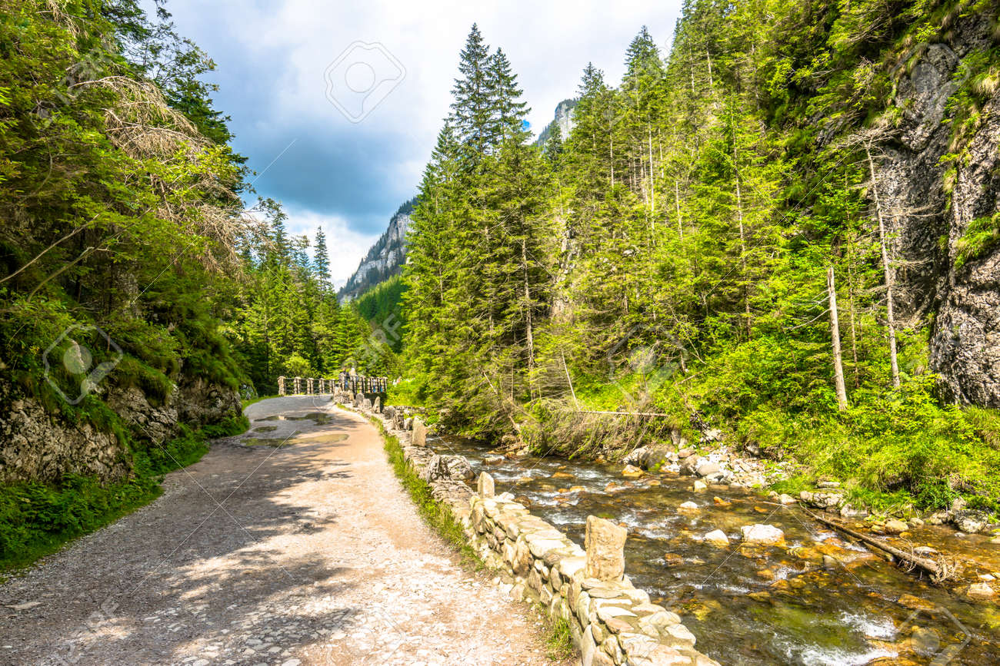
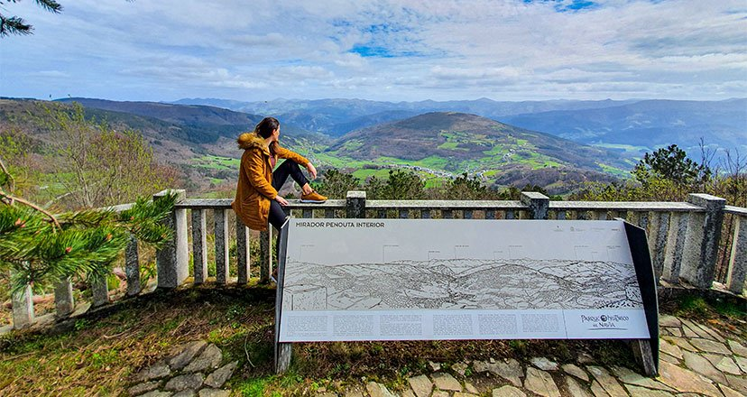

Senderismo
Fecha: 12/04/2024
Precio: 45€
Nos complace presentarte una emocionante oportunidad para sumergirte en la belleza natural y explorar los paisajes más impresionantes de nuestra región: una jornada de senderismo diseñada para aquellos que buscan aventura, conexión con la naturaleza y una experiencia inolvidable. Iniciamos nuestra jornada adentrándonos en el Bosque de los Susurros, donde los altos pinos juegan con el viento para crear una melodía natural única, acompañándonos mientras observamos la diversa fauna que habita este lugar. A medida que avanzamos, el sendero nos lleva hacia el sereno Arroyo de Plata; aquí, nos detenemos brevemente para disfrutar de la paz que transmite su fluir y capturar momentos únicos con nuestras cámaras. El camino asciende suavemente hacia el Mirador del Águila, ofreciéndonos una vista panorámica que abarca el valle y las montañas circundantes, un espectáculo de naturaleza en su máxima expresión que invita a una pausa para el almuerzo. Con el descenso, llegamos al Valle de las Sombras, cuyo nombre proviene de las cambiantes siluetas que proyectan las montañas, revelando una rica diversidad de plantas raras y endémicas que deleitan a los amantes de la botánica. Nuestra exploración continúa hacia el enigmático Bosque Encantado, un lugar que parece sacado de un cuento de hadas, con árboles centenarios y musgo que cubre cada superficie, creando una atmósfera de misterio y magia. Este bosque marca el último tramo de nuestra ruta, guiándonos suavemente hacia el punto de inicio, donde la jornada concluye.
 

Comentarios
Carmen
10/03/2024 14:27:11
"Estoy deseando iniciarme en actividades de montaña, ¡creo que este será un buen comienzo!"
Lucas
11/03/2024 08:49:31
"Quería regalar a mi pareja una actividad y se que esta será perfecta."